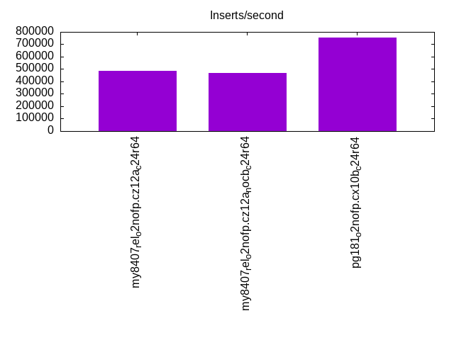
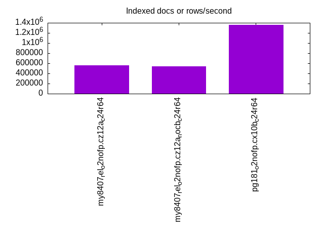
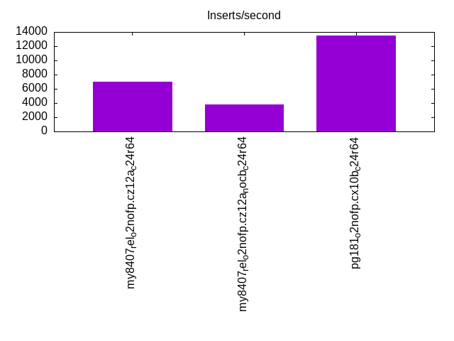
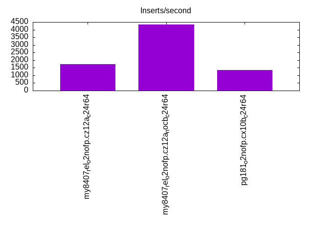
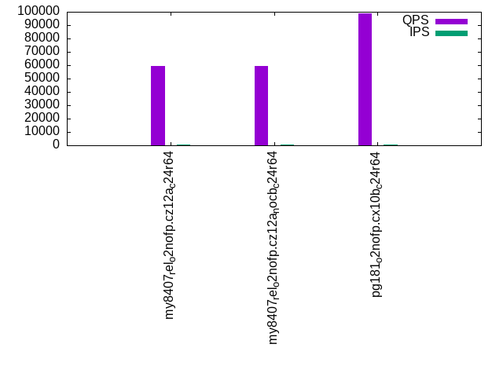
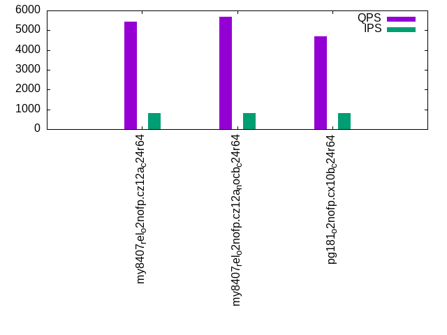
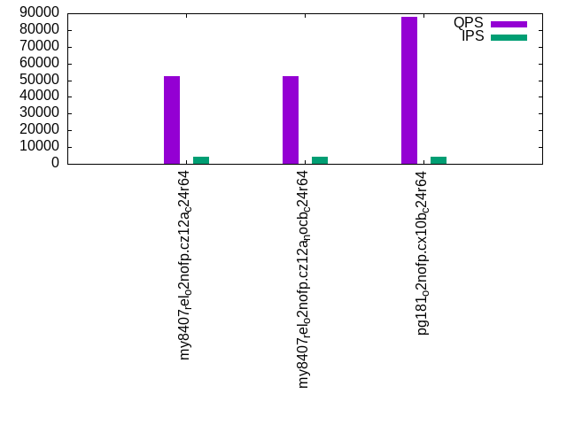
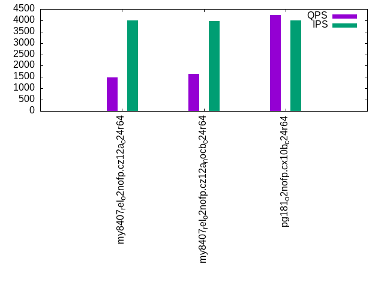
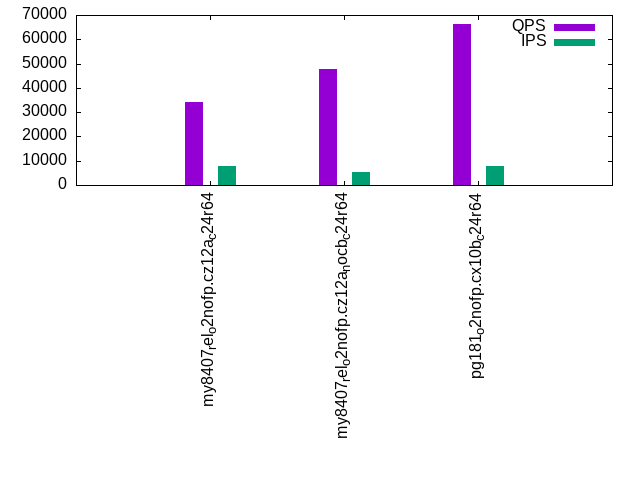
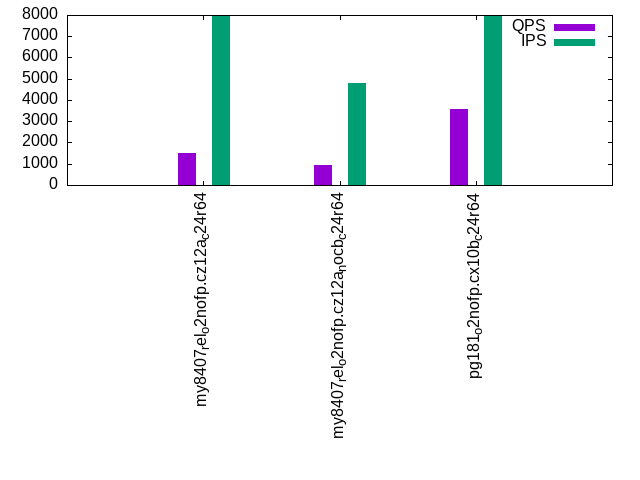

This is a report for the insert benchmark with 2000M docs and 8 client(s). It is generated by scripts (bash, awk, sed) and Tufte might not be impressed. An overview of the insert benchmark is here and a short update is here. Below, by DBMS, I mean DBMS+version.config. An example is my8020.c10b40 where my means MySQL, 8020 is version 8.0.20 and c10b40 is the name for the configuration file.
The test server has 24 cores, 2 sockets, 64G RAM and 1 NVMe devices. The benchmark was run with 8 clients and there were 1 or 3 connections per client (1 for queries or inserts without rate limits, 1+1 for rate limited inserts+deletes). It uses 8 tables with a table per client. It loads 250M rows per table without secondary indexes, creates 3 secondary indexes per table, then inserts 4m+1m rows per table with a delete per insert to avoid growing the table. It then does 6 read+write tests for 1800s each that do queries as fast as possible with 100,100,500,500,1000,1000 inserts/s and the same for deletes/s per client concurrent with the queries. The database is larger than RAM and most tests are IO-bound except for the range query (qr*) tests that frequently have a cached working set. Clients and the DBMS share one server.
The tested DBMS are:
The numbers are inserts/s for l.i0, l.i1 and l.i2, indexed docs (or rows) /s for l.x and queries/s for qr100, qp100 thru qr1000, qp1000" The values are the average rate over the entire test for inserts (IPS) and queries (QPS). The range of values for IPS and QPS is split into 3 parts: bottom 25%, middle 50%, top 25%. Values in the bottom 25% have a red background, values in the top 25% have a green background and values in the middle have no color. A gray background is used for values that can be ignored because the DBMS did not sustain the target insert rate. Red backgrounds are not used when the minimum value is within 80% of the max value.
| dbms | l.i0 | l.x | l.i1 | l.i2 | qr100 | qp100 | qr500 | qp500 | qr1000 | qp1000 |
|---|---|---|---|---|---|---|---|---|---|---|
| my8407_rel_o2nofp.cz12a_c24r64 | 485084 | 557880 | 7039 | 1732 | 59437 | 5434 | 52443 | 1484 | 34162 | 1519 |
| my8407_rel_o2nofp.cz12a_nocb_c24r64 | 471365 | 540248 | 3801 | 4352 | 59136 | 5673 | 52590 | 1650 | 47868 | 926 |
| pg181_o2nofp.cx10b_c24r64 | 752729 | 1356852 | 13457 | 1338 | 98949 | 4679 | 87743 | 4232 | 66129 | 3599 |
This table has relative throughput, throughput for the DBMS relative to the DBMS in the first line, using the absolute throughput from the previous table. Values less than 0.95 have a yellow background. Values greater than 1.05 have a blue background.
| dbms | l.i0 | l.x | l.i1 | l.i2 | qr100 | qp100 | qr500 | qp500 | qr1000 | qp1000 |
|---|---|---|---|---|---|---|---|---|---|---|
| my8407_rel_o2nofp.cz12a_c24r64 | 1.00 | 1.00 | 1.00 | 1.00 | 1.00 | 1.00 | 1.00 | 1.00 | 1.00 | 1.00 |
| my8407_rel_o2nofp.cz12a_nocb_c24r64 | 0.97 | 0.97 | 0.54 | 2.51 | 0.99 | 1.04 | 1.00 | 1.11 | 1.40 | 0.61 |
| pg181_o2nofp.cx10b_c24r64 | 1.55 | 2.43 | 1.91 | 0.77 | 1.66 | 0.86 | 1.67 | 2.85 | 1.94 | 2.37 |
This lists the average rate of inserts/s for the tests that do inserts concurrent with queries. For such tests the query rate is listed in the table above. The read+write tests are setup so that the insert rate should match the target rate every second. Cells that are not at least 95% of the target have a red background to indicate a failure to satisfy the target.
| dbms | qr100.L1 | qp100.L2 | qr500.L3 | qp500.L4 | qr1000.L5 | qp1000.L6 |
|---|---|---|---|---|---|---|
| my8407_rel_o2nofp.cz12a_c24r64 | 796 | 797 | 3984 | 3984 | 7960 | 7951 |
| my8407_rel_o2nofp.cz12a_nocb_c24r64 | 796 | 797 | 3984 | 3982 | 5152 | 4810 |
| pg181_o2nofp.cx10b_c24r64 | 796 | 796 | 3984 | 3984 | 7969 | 7965 |
| target | 800 | 800 | 4000 | 4000 | 8000 | 8000 |
l.i0: load without secondary indexes. Graphs for performance per 1-second interval are here.
Average throughput:
Insert response time histogram: each cell has the percentage of responses that take <= the time in the header and max is the max response time in seconds. For the max column values in the top 25% of the range have a red background and in the bottom 25% of the range have a green background. The red background is not used when the min value is within 80% of the max value.
| dbms | 256us | 1ms | 4ms | 16ms | 64ms | 256ms | 1s | 4s | 16s | gt | max |
|---|---|---|---|---|---|---|---|---|---|---|---|
| my8407_rel_o2nofp.cz12a_c24r64 | 99.700 | 0.222 | 0.063 | 0.014 | 0.002 | 0.281 | |||||
| my8407_rel_o2nofp.cz12a_nocb_c24r64 | 99.697 | 0.229 | 0.059 | 0.014 | 0.002 | 0.277 | |||||
| pg181_o2nofp.cx10b_c24r64 | 25.879 | 74.086 | 0.026 | 0.008 | nonzero | nonzero | 0.444 |
Performance metrics for the DBMS listed above. Some are normalized by throughput, others are not. Legend for results is here.
ips qps rps rmbps wps wmbps rpq rkbpq wpi wkbpi csps cpups cspq cpupq dbgb1 dbgb2 rss maxop p50 p99 tag 485084 0 1 0.0 3262.7 181.3 0.000 0.000 0.007 0.383 94996 46.9 0.196 23 131.1 274.6 48.7 0.281 63292 42795 my8407_rel_o2nofp.cz12a_c24r64 471365 0 1 0.0 3166.8 176.1 0.000 0.000 0.007 0.382 93007 47.0 0.197 24 131.1 274.6 47.8 0.277 60793 42093 my8407_rel_o2nofp.cz12a_nocb_c24r64 752729 0 543 4.5 2699.7 301.9 0.001 0.006 0.004 0.411 74366 52.2 0.099 17 191.4 255.4 47.5 0.444 95788 83485 pg181_o2nofp.cx10b_c24r64
Average values from iostat.
r/s rkB/s rrqm/s %rrqm r_await rareq-s w/s wkB/s wrqm/s %wrqm w_await wareq-s d/s dkB/s drqm/s %drqm d_await dareq-s f/s f_await aqu-sz %util 0.947 9.890 0.000 0.000 3.024 5.618 3262.7 185629 59.39 1.903 8.165 57.33 0.404 3.106 0.000 0.000 0.134 3.333 0.000 0.000 27.02 12.19 my8407_rel_o2nofp.cz12a_c24r64 1.005 10.05 0.000 0.000 2.513 5.614 3166.8 180281 57.84 1.908 7.990 57.39 0.329 2.994 0.000 0.000 0.127 3.932 0.000 0.000 25.62 11.85 my8407_rel_o2nofp.cz12a_nocb_c24r64 542.7 4650.1 0.044 0.272 0.807 4.648 2699.7 309127 115.3 3.341 2.814 117.6 0.297 198.8 0.000 0.000 0.082 78.35 0.000 0.000 8.605 16.96 pg181_o2nofp.cx10b_c24r64
l.x: create secondary indexes.
Average throughput:
Performance metrics for the DBMS listed above. Some are normalized by throughput, others are not. Legend for results is here.
ips qps rps rmbps wps wmbps rpq rkbpq wpi wkbpi csps cpups cspq cpupq dbgb1 dbgb2 rss maxop p50 p99 tag 557880 0 7597 732.8 17195.2 816.4 0.014 1.345 0.031 1.499 47035 38.4 0.084 17 301.8 445.2 47.7 0.003 NA NA my8407_rel_o2nofp.cz12a_c24r64 540248 0 7349 708.5 16634.9 790.7 0.014 1.343 0.031 1.499 46806 37.2 0.087 17 301.8 445.2 48.1 0.045 NA NA my8407_rel_o2nofp.cz12a_nocb_c24r64 1356852 0 7388 380.1 3150.0 385.3 0.005 0.287 0.002 0.291 20692 25.7 0.015 5 384.2 448.3 24.4 0.003 NA NA pg181_o2nofp.cx10b_c24r64
Average values from iostat.
r/s rkB/s rrqm/s %rrqm r_await rareq-s w/s wkB/s wrqm/s %wrqm w_await wareq-s d/s dkB/s drqm/s %drqm d_await dareq-s f/s f_await aqu-sz %util 7597.0 750373 0.000 0.000 1.025 115.6 17195.2 835992 111.4 0.690 17.18 73.27 11.04 90250.6 0.000 0.000 0.095 920.8 0.000 0.000 194.5 98.55 my8407_rel_o2nofp.cz12a_c24r64 7348.9 725481 0.000 0.000 1.066 116.6 16634.9 809718 109.5 0.675 17.92 73.25 10.55 87446.4 0.000 0.000 0.091 930.3 0.000 0.000 196.3 98.61 my8407_rel_o2nofp.cz12a_nocb_c24r64 7387.9 389271 0.052 0.001 0.279 74.71 3150.0 394535 58.06 2.360 14.70 123.9 3.482 98580.5 0.000 0.000 0.280 1597.2 0.000 0.000 48.64 55.66 pg181_o2nofp.cx10b_c24r64
l.i1: continue load after secondary indexes created with 50 inserts per transaction. Graphs for performance per 1-second interval are here.
Average throughput:
Insert response time histogram: each cell has the percentage of responses that take <= the time in the header and max is the max response time in seconds. For the max column values in the top 25% of the range have a red background and in the bottom 25% of the range have a green background. The red background is not used when the min value is within 80% of the max value.
| dbms | 256us | 1ms | 4ms | 16ms | 64ms | 256ms | 1s | 4s | 16s | gt | max |
|---|---|---|---|---|---|---|---|---|---|---|---|
| my8407_rel_o2nofp.cz12a_c24r64 | 0.008 | 25.345 | 43.386 | 30.698 | 0.563 | 0.787 | |||||
| my8407_rel_o2nofp.cz12a_nocb_c24r64 | 0.338 | 11.355 | 87.948 | 0.360 | 0.575 | ||||||
| pg181_o2nofp.cx10b_c24r64 | 78.647 | 21.016 | 0.290 | 0.048 | nonzero | 2.409 |
Delete response time histogram: each cell has the percentage of responses that take <= the time in the header and max is the max response time in seconds. For the max column values in the top 25% of the range have a red background and in the bottom 25% of the range have a green background. The red background is not used when the min value is within 80% of the max value.
| dbms | 256us | 1ms | 4ms | 16ms | 64ms | 256ms | 1s | 4s | 16s | gt | max |
|---|---|---|---|---|---|---|---|---|---|---|---|
| my8407_rel_o2nofp.cz12a_c24r64 | 27.798 | 57.065 | 13.238 | 1.830 | 0.070 | 0.755 | |||||
| my8407_rel_o2nofp.cz12a_nocb_c24r64 | 6.438 | 37.432 | 56.121 | 0.009 | 0.340 | ||||||
| pg181_o2nofp.cx10b_c24r64 | 0.779 | 6.533 | 19.977 | 72.702 | 0.009 | 0.251 |
Performance metrics for the DBMS listed above. Some are normalized by throughput, others are not. Legend for results is here.
ips qps rps rmbps wps wmbps rpq rkbpq wpi wkbpi csps cpups cspq cpupq dbgb1 dbgb2 rss maxop p50 p99 tag 7039 0 15240 238.1 22142.1 659.1 2.165 34.641 3.146 95.886 138214 20.1 19.635 685 405.8 560.7 48.5 0.787 800 250 my8407_rel_o2nofp.cz12a_c24r64 3801 0 18268 285.4 23992.4 689.7 4.806 76.891 6.312 185.804 152877 14.4 40.217 909 359.9 506.5 48.7 0.575 500 300 my8407_rel_o2nofp.cz12a_nocb_c24r64 13457 0 17245 138.6 20272.2 340.2 1.282 10.548 1.506 25.891 42912 31.6 3.189 564 389.4 453.5 48.5 2.409 2050 700 pg181_o2nofp.cx10b_c24r64
Average values from iostat.
r/s rkB/s rrqm/s %rrqm r_await rareq-s w/s wkB/s wrqm/s %wrqm w_await wareq-s d/s dkB/s drqm/s %drqm d_await dareq-s f/s f_await aqu-sz %util 15240.2 243841 0.000 0.000 1.024 16.00 22142.1 674952 51.51 0.270 15.44 30.79 0.013 0.602 0.000 0.000 0.017 2.099 0.000 0.000 358.1 99.50 my8407_rel_o2nofp.cz12a_c24r64 18267.8 292284 0.001 0.000 0.899 16.00 23992.4 706297 15.14 0.088 15.63 29.62 0.022 0.207 0.000 0.000 0.073 0.939 0.000 0.000 391.5 99.99 my8407_rel_o2nofp.cz12a_nocb_c24r64 17245.1 141946 0.208 0.001 0.125 8.258 20272.2 348399 92.38 0.535 0.539 19.82 0.352 4975.5 0.000 0.000 0.021 156.7 0.000 0.000 16.30 77.30 pg181_o2nofp.cx10b_c24r64
l.i2: continue load after secondary indexes created with 5 inserts per transaction. Graphs for performance per 1-second interval are here.
Average throughput:
Insert response time histogram: each cell has the percentage of responses that take <= the time in the header and max is the max response time in seconds. For the max column values in the top 25% of the range have a red background and in the bottom 25% of the range have a green background. The red background is not used when the min value is within 80% of the max value.
| dbms | 256us | 1ms | 4ms | 16ms | 64ms | 256ms | 1s | 4s | 16s | gt | max |
|---|---|---|---|---|---|---|---|---|---|---|---|
| my8407_rel_o2nofp.cz12a_c24r64 | 3.421 | 7.497 | 37.050 | 49.074 | 2.957 | 0.001 | 0.730 | ||||
| my8407_rel_o2nofp.cz12a_nocb_c24r64 | 0.064 | 14.735 | 76.549 | 8.510 | 0.142 | 0.001 | 0.479 | ||||
| pg181_o2nofp.cx10b_c24r64 | 13.469 | 86.530 | 0.001 | 0.006 |
Delete response time histogram: each cell has the percentage of responses that take <= the time in the header and max is the max response time in seconds. For the max column values in the top 25% of the range have a red background and in the bottom 25% of the range have a green background. The red background is not used when the min value is within 80% of the max value.
| dbms | 256us | 1ms | 4ms | 16ms | 64ms | 256ms | 1s | 4s | 16s | gt | max |
|---|---|---|---|---|---|---|---|---|---|---|---|
| my8407_rel_o2nofp.cz12a_c24r64 | 3.674 | 14.657 | 36.820 | 43.285 | 1.564 | 0.001 | 0.735 | ||||
| my8407_rel_o2nofp.cz12a_nocb_c24r64 | 0.264 | 21.748 | 72.699 | 5.236 | 0.053 | 0.001 | 0.480 | ||||
| pg181_o2nofp.cx10b_c24r64 | 99.999 | 0.001 | 0.160 |
Performance metrics for the DBMS listed above. Some are normalized by throughput, others are not. Legend for results is here.
ips qps rps rmbps wps wmbps rpq rkbpq wpi wkbpi csps cpups cspq cpupq dbgb1 dbgb2 rss maxop p50 p99 tag 1732 0 16043 250.7 20832.9 589.2 9.265 148.241 12.031 348.455 141637 15.8 81.796 2190 405.8 562.5 48.5 0.730 135 85 my8407_rel_o2nofp.cz12a_c24r64 4352 0 18992 296.7 24513.8 692.4 4.363 69.815 5.632 162.909 190691 20.0 43.812 1103 359.9 508.1 48.7 0.479 545 425 my8407_rel_o2nofp.cz12a_nocb_c24r64 1338 0 1684 13.5 2314.9 36.0 1.259 10.312 1.730 27.533 9906 32.4 7.405 5813 390.8 454.8 48.5 0.006 170 150 pg181_o2nofp.cx10b_c24r64
Average values from iostat.
r/s rkB/s rrqm/s %rrqm r_await rareq-s w/s wkB/s wrqm/s %wrqm w_await wareq-s d/s dkB/s drqm/s %drqm d_await dareq-s f/s f_await aqu-sz %util 16043.4 256695 0.000 0.000 0.745 16.00 20832.9 603384 6.000 0.029 15.21 28.96 0.021 0.119 0.000 0.000 0.076 0.501 0.000 0.000 328.8 99.09 my8407_rel_o2nofp.cz12a_c24r64 18992.0 303872 0.000 0.000 0.928 16.00 24513.8 709059 2.281 0.011 15.63 28.93 0.041 0.327 0.000 0.000 0.150 1.330 0.000 0.000 400.6 99.98 my8407_rel_o2nofp.cz12a_nocb_c24r64 1684.1 13794.8 0.001 0.000 0.087 8.181 2314.9 36831.5 12.59 0.470 0.051 16.12 0.015 0.267 0.000 0.000 0.015 0.501 0.000 0.000 0.263 16.08 pg181_o2nofp.cx10b_c24r64
qr100.L1: range queries with 100 insert/s per client. Graphs for performance per 1-second interval are here.
Average throughput:
Query response time histogram: each cell has the percentage of responses that take <= the time in the header and max is the max response time in seconds. For max values in the top 25% of the range have a red background and in the bottom 25% of the range have a green background. The red background is not used when the min value is within 80% of the max value.
| dbms | 256us | 1ms | 4ms | 16ms | 64ms | 256ms | 1s | 4s | 16s | gt | max |
|---|---|---|---|---|---|---|---|---|---|---|---|
| my8407_rel_o2nofp.cz12a_c24r64 | 99.871 | 0.126 | 0.002 | nonzero | nonzero | 0.062 | |||||
| my8407_rel_o2nofp.cz12a_nocb_c24r64 | 99.870 | 0.129 | 0.001 | nonzero | nonzero | 0.028 | |||||
| pg181_o2nofp.cx10b_c24r64 | 99.994 | 0.006 | nonzero | 0.003 |
Insert response time histogram: each cell has the percentage of responses that take <= the time in the header and max is the max response time in seconds. For max values in the top 25% of the range have a red background and in the bottom 25% of the range have a green background. The red background is not used when the min value is within 80% of the max value.
| dbms | 256us | 1ms | 4ms | 16ms | 64ms | 256ms | 1s | 4s | 16s | gt | max |
|---|---|---|---|---|---|---|---|---|---|---|---|
| my8407_rel_o2nofp.cz12a_c24r64 | 52.226 | 41.094 | 6.681 | 0.181 | |||||||
| my8407_rel_o2nofp.cz12a_nocb_c24r64 | 49.330 | 50.670 | 0.053 | ||||||||
| pg181_o2nofp.cx10b_c24r64 | 99.819 | 0.181 | 0.021 |
Delete response time histogram: each cell has the percentage of responses that take <= the time in the header and max is the max response time in seconds. For max values in the top 25% of the range have a red background and in the bottom 25% of the range have a green background. The red background is not used when the min value is within 80% of the max value.
| dbms | 256us | 1ms | 4ms | 16ms | 64ms | 256ms | 1s | 4s | 16s | gt | max |
|---|---|---|---|---|---|---|---|---|---|---|---|
| my8407_rel_o2nofp.cz12a_c24r64 | 94.802 | 2.163 | 2.882 | 0.153 | 0.130 | ||||||
| my8407_rel_o2nofp.cz12a_nocb_c24r64 | 80.139 | 19.861 | 0.048 | ||||||||
| pg181_o2nofp.cx10b_c24r64 | 19.719 | 80.260 | 0.021 | 0.005 |
Performance metrics for the DBMS listed above. Some are normalized by throughput, others are not. Legend for results is here.
ips qps rps rmbps wps wmbps rpq rkbpq wpi wkbpi csps cpups cspq cpupq dbgb1 dbgb2 rss maxop p50 p99 tag 796 59437 3758 58.7 4117.7 117.2 0.063 1.012 5.170 150.758 362638 36.2 6.101 146 405.8 562.6 48.5 0.062 7503 6831 my8407_rel_o2nofp.cz12a_c24r64 796 59136 3492 54.6 3593.5 102.0 0.059 0.945 4.512 131.130 356326 35.9 6.026 146 359.9 508.2 48.7 0.028 7487 6751 my8407_rel_o2nofp.cz12a_nocb_c24r64 796 98949 1070 8.8 538.6 15.1 0.011 0.091 0.676 19.449 380488 33.5 3.845 81 390.8 454.9 48.6 0.003 12414 11838 pg181_o2nofp.cx10b_c24r64
Average values from iostat.
r/s rkB/s rrqm/s %rrqm r_await rareq-s w/s wkB/s wrqm/s %wrqm w_await wareq-s d/s dkB/s drqm/s %drqm d_await dareq-s f/s f_await aqu-sz %util 3758.2 60130.9 0.000 0.000 0.320 16.00 4117.7 120064 2.158 0.056 10.82 29.27 0.003 0.013 0.000 0.000 0.006 0.066 0.000 0.000 47.66 20.83 my8407_rel_o2nofp.cz12a_c24r64 3492.1 55873.1 0.000 0.000 0.133 16.00 3593.5 104432 1.554 0.049 8.068 29.17 0.006 0.049 0.000 0.000 0.066 0.244 0.000 0.000 31.40 19.23 my8407_rel_o2nofp.cz12a_nocb_c24r64 1069.5 9033.6 0.000 0.000 0.099 8.440 538.6 15489.6 4.613 1.882 0.140 54.77 0.001 0.002 0.000 0.000 0.000 0.011 0.000 0.000 0.146 4.289 pg181_o2nofp.cx10b_c24r64
qp100.L2: point queries with 100 insert/s per client. Graphs for performance per 1-second interval are here.
Average throughput:
Query response time histogram: each cell has the percentage of responses that take <= the time in the header and max is the max response time in seconds. For max values in the top 25% of the range have a red background and in the bottom 25% of the range have a green background. The red background is not used when the min value is within 80% of the max value.
| dbms | 256us | 1ms | 4ms | 16ms | 64ms | 256ms | 1s | 4s | 16s | gt | max |
|---|---|---|---|---|---|---|---|---|---|---|---|
| my8407_rel_o2nofp.cz12a_c24r64 | 0.001 | 18.703 | 78.122 | 3.066 | 0.109 | nonzero | 0.104 | ||||
| my8407_rel_o2nofp.cz12a_nocb_c24r64 | 0.001 | 19.846 | 77.920 | 2.114 | 0.119 | nonzero | 0.072 | ||||
| pg181_o2nofp.cx10b_c24r64 | 1.205 | 98.488 | 0.275 | 0.024 | 0.008 | nonzero | 0.668 |
Insert response time histogram: each cell has the percentage of responses that take <= the time in the header and max is the max response time in seconds. For max values in the top 25% of the range have a red background and in the bottom 25% of the range have a green background. The red background is not used when the min value is within 80% of the max value.
| dbms | 256us | 1ms | 4ms | 16ms | 64ms | 256ms | 1s | 4s | 16s | gt | max |
|---|---|---|---|---|---|---|---|---|---|---|---|
| my8407_rel_o2nofp.cz12a_c24r64 | 33.465 | 63.556 | 2.979 | 0.134 | |||||||
| my8407_rel_o2nofp.cz12a_nocb_c24r64 | 0.385 | 95.174 | 4.441 | 0.166 | |||||||
| pg181_o2nofp.cx10b_c24r64 | 58.885 | 40.517 | 0.500 | 0.097 | 0.341 |
Delete response time histogram: each cell has the percentage of responses that take <= the time in the header and max is the max response time in seconds. For max values in the top 25% of the range have a red background and in the bottom 25% of the range have a green background. The red background is not used when the min value is within 80% of the max value.
| dbms | 256us | 1ms | 4ms | 16ms | 64ms | 256ms | 1s | 4s | 16s | gt | max |
|---|---|---|---|---|---|---|---|---|---|---|---|
| my8407_rel_o2nofp.cz12a_c24r64 | 93.410 | 6.160 | 0.431 | 0.052 | |||||||
| my8407_rel_o2nofp.cz12a_nocb_c24r64 | 11.226 | 87.069 | 1.705 | 0.138 | |||||||
| pg181_o2nofp.cx10b_c24r64 | 65.656 | 34.253 | 0.083 | 0.007 | 0.075 |
Performance metrics for the DBMS listed above. Some are normalized by throughput, others are not. Legend for results is here.
ips qps rps rmbps wps wmbps rpq rkbpq wpi wkbpi csps cpups cspq cpupq dbgb1 dbgb2 rss maxop p50 p99 tag 797 5434 43934 686.5 7440.4 208.0 8.085 129.353 9.337 267.254 145505 13.1 26.775 579 405.8 562.7 48.4 0.104 720 256 my8407_rel_o2nofp.cz12a_c24r64 797 5673 45406 709.5 7027.2 195.7 8.004 128.070 8.818 251.488 146588 13.0 25.841 550 359.9 508.4 48.7 0.072 736 272 my8407_rel_o2nofp.cz12a_nocb_c24r64 796 4679 64656 505.5 2677.2 31.2 13.819 110.621 3.362 40.149 144145 12.2 30.807 626 390.9 454.7 48.6 0.668 608 288 pg181_o2nofp.cx10b_c24r64
Average values from iostat.
r/s rkB/s rrqm/s %rrqm r_await rareq-s w/s wkB/s wrqm/s %wrqm w_await wareq-s d/s dkB/s drqm/s %drqm d_await dareq-s f/s f_await aqu-sz %util 43934.0 702943 0.000 0.000 0.175 16.00 7440.4 212975 1.941 0.028 10.92 28.65 0.008 0.038 0.000 0.000 0.011 0.151 0.000 0.000 90.46 99.96 my8407_rel_o2nofp.cz12a_c24r64 45405.6 726490 0.000 0.000 0.143 16.00 7027.2 200411 2.212 0.034 9.552 28.54 0.015 0.120 0.000 0.000 0.020 0.554 0.000 0.000 75.79 99.96 my8407_rel_o2nofp.cz12a_nocb_c24r64 64655.8 517584 0.002 0.000 0.080 8.006 2677.2 31974.3 8.634 0.445 0.031 13.77 0.011 136.3 0.000 0.000 0.001 35.88 0.000 0.000 5.428 98.94 pg181_o2nofp.cx10b_c24r64
qr500.L3: range queries with 500 insert/s per client. Graphs for performance per 1-second interval are here.
Average throughput:
Query response time histogram: each cell has the percentage of responses that take <= the time in the header and max is the max response time in seconds. For max values in the top 25% of the range have a red background and in the bottom 25% of the range have a green background. The red background is not used when the min value is within 80% of the max value.
| dbms | 256us | 1ms | 4ms | 16ms | 64ms | 256ms | 1s | 4s | 16s | gt | max |
|---|---|---|---|---|---|---|---|---|---|---|---|
| my8407_rel_o2nofp.cz12a_c24r64 | 99.257 | 0.711 | 0.023 | 0.005 | 0.004 | nonzero | 0.105 | ||||
| my8407_rel_o2nofp.cz12a_nocb_c24r64 | 98.970 | 1.003 | 0.019 | 0.006 | 0.002 | nonzero | 0.077 | ||||
| pg181_o2nofp.cx10b_c24r64 | 99.895 | 0.104 | 0.001 | nonzero | nonzero | 0.048 |
Insert response time histogram: each cell has the percentage of responses that take <= the time in the header and max is the max response time in seconds. For max values in the top 25% of the range have a red background and in the bottom 25% of the range have a green background. The red background is not used when the min value is within 80% of the max value.
| dbms | 256us | 1ms | 4ms | 16ms | 64ms | 256ms | 1s | 4s | 16s | gt | max |
|---|---|---|---|---|---|---|---|---|---|---|---|
| my8407_rel_o2nofp.cz12a_c24r64 | 32.505 | 46.732 | 20.731 | 0.033 | 0.307 | ||||||
| my8407_rel_o2nofp.cz12a_nocb_c24r64 | 9.017 | 61.985 | 28.998 | 0.212 | |||||||
| pg181_o2nofp.cx10b_c24r64 | 80.472 | 19.528 | 0.063 |
Delete response time histogram: each cell has the percentage of responses that take <= the time in the header and max is the max response time in seconds. For max values in the top 25% of the range have a red background and in the bottom 25% of the range have a green background. The red background is not used when the min value is within 80% of the max value.
| dbms | 256us | 1ms | 4ms | 16ms | 64ms | 256ms | 1s | 4s | 16s | gt | max |
|---|---|---|---|---|---|---|---|---|---|---|---|
| my8407_rel_o2nofp.cz12a_c24r64 | 89.079 | 6.316 | 3.889 | 0.716 | 0.244 | ||||||
| my8407_rel_o2nofp.cz12a_nocb_c24r64 | 35.766 | 52.785 | 11.449 | 0.181 | |||||||
| pg181_o2nofp.cx10b_c24r64 | 0.513 | 70.298 | 29.189 | 0.061 |
Performance metrics for the DBMS listed above. Some are normalized by throughput, others are not. Legend for results is here.
ips qps rps rmbps wps wmbps rpq rkbpq wpi wkbpi csps cpups cspq cpupq dbgb1 dbgb2 rss maxop p50 p99 tag 3984 52443 17097 267.1 20625.3 585.2 0.326 5.216 5.176 150.392 414666 47.4 7.907 217 405.8 563.4 48.4 0.105 6575 6111 my8407_rel_o2nofp.cz12a_c24r64 3984 52590 17620 275.3 21116.4 595.3 0.335 5.361 5.300 152.999 410363 46.6 7.803 213 359.9 509.1 48.7 0.077 6623 6191 my8407_rel_o2nofp.cz12a_nocb_c24r64 3984 87743 5751 46.5 5281.4 91.8 0.066 0.543 1.325 23.597 342485 39.9 3.903 109 391.1 455.2 47.8 0.048 10926 10142 pg181_o2nofp.cx10b_c24r64
Average values from iostat.
r/s rkB/s rrqm/s %rrqm r_await rareq-s w/s wkB/s wrqm/s %wrqm w_await wareq-s d/s dkB/s drqm/s %drqm d_await dareq-s f/s f_await aqu-sz %util 17096.9 273551 0.000 0.000 0.713 16.00 20625.3 599238 6.422 0.031 13.99 29.14 0.036 0.164 0.000 0.000 0.107 0.659 0.000 0.000 303.0 93.18 my8407_rel_o2nofp.cz12a_c24r64 17619.7 281915 0.000 0.000 0.448 16.00 21116.4 609626 1.983 0.012 12.15 28.94 0.034 0.275 0.000 0.000 0.102 1.241 0.000 0.000 266.9 81.47 my8407_rel_o2nofp.cz12a_nocb_c24r64 5750.7 47617.0 0.000 0.000 0.116 8.268 5281.4 94022.9 21.99 0.555 0.308 30.27 0.095 1407.2 0.000 0.000 0.002 57.15 0.000 0.000 2.528 18.95 pg181_o2nofp.cx10b_c24r64
qp500.L4: point queries with 500 insert/s per client. Graphs for performance per 1-second interval are here.
Average throughput:
Query response time histogram: each cell has the percentage of responses that take <= the time in the header and max is the max response time in seconds. For max values in the top 25% of the range have a red background and in the bottom 25% of the range have a green background. The red background is not used when the min value is within 80% of the max value.
| dbms | 256us | 1ms | 4ms | 16ms | 64ms | 256ms | 1s | 4s | 16s | gt | max |
|---|---|---|---|---|---|---|---|---|---|---|---|
| my8407_rel_o2nofp.cz12a_c24r64 | 0.042 | 47.146 | 49.998 | 2.808 | 0.004 | 0.106 | |||||
| my8407_rel_o2nofp.cz12a_nocb_c24r64 | 0.172 | 48.485 | 48.395 | 2.936 | 0.012 | 0.115 | |||||
| pg181_o2nofp.cx10b_c24r64 | 0.491 | 99.181 | 0.328 | 0.016 |
Insert response time histogram: each cell has the percentage of responses that take <= the time in the header and max is the max response time in seconds. For max values in the top 25% of the range have a red background and in the bottom 25% of the range have a green background. The red background is not used when the min value is within 80% of the max value.
| dbms | 256us | 1ms | 4ms | 16ms | 64ms | 256ms | 1s | 4s | 16s | gt | max |
|---|---|---|---|---|---|---|---|---|---|---|---|
| my8407_rel_o2nofp.cz12a_c24r64 | 14.489 | 69.046 | 16.465 | 0.255 | |||||||
| my8407_rel_o2nofp.cz12a_nocb_c24r64 | 1.368 | 47.817 | 50.812 | 0.003 | 0.284 | ||||||
| pg181_o2nofp.cx10b_c24r64 | 21.614 | 78.384 | 0.002 | 0.089 |
Delete response time histogram: each cell has the percentage of responses that take <= the time in the header and max is the max response time in seconds. For max values in the top 25% of the range have a red background and in the bottom 25% of the range have a green background. The red background is not used when the min value is within 80% of the max value.
| dbms | 256us | 1ms | 4ms | 16ms | 64ms | 256ms | 1s | 4s | 16s | gt | max |
|---|---|---|---|---|---|---|---|---|---|---|---|
| my8407_rel_o2nofp.cz12a_c24r64 | 88.525 | 8.731 | 2.651 | 0.094 | 0.124 | ||||||
| my8407_rel_o2nofp.cz12a_nocb_c24r64 | 12.644 | 64.956 | 22.400 | 0.001 | 0.259 | ||||||
| pg181_o2nofp.cx10b_c24r64 | 0.060 | 99.934 | 0.006 | 0.084 |
Performance metrics for the DBMS listed above. Some are normalized by throughput, others are not. Legend for results is here.
ips qps rps rmbps wps wmbps rpq rkbpq wpi wkbpi csps cpups cspq cpupq dbgb1 dbgb2 rss maxop p50 p99 tag 3984 1484 31932 498.9 22623.1 635.7 21.514 344.229 5.678 163.381 166872 17.6 112.432 2846 405.8 564.2 48.4 0.106 192 112 my8407_rel_o2nofp.cz12a_c24r64 3982 1650 34295 535.9 23604.2 660.8 20.786 332.580 5.927 169.910 180151 17.2 109.189 2502 359.9 509.8 48.7 0.115 208 96 my8407_rel_o2nofp.cz12a_nocb_c24r64 3984 4232 66934 524.6 9733.7 125.4 15.817 126.947 2.443 32.223 146952 22.6 34.726 1282 391.4 455.4 48.0 0.016 528 368 pg181_o2nofp.cx10b_c24r64
Average values from iostat.
r/s rkB/s rrqm/s %rrqm r_await rareq-s w/s wkB/s wrqm/s %wrqm w_await wareq-s d/s dkB/s drqm/s %drqm d_await dareq-s f/s f_await aqu-sz %util 31931.6 510905 0.000 0.000 0.654 16.00 22623.1 650993 3.040 0.013 13.75 28.78 0.035 0.157 0.000 0.000 0.135 0.663 0.000 0.000 331.8 99.99 my8407_rel_o2nofp.cz12a_c24r64 34295.2 548723 0.000 0.000 0.493 16.00 23604.2 676634 2.598 0.011 12.65 28.67 0.033 0.177 0.000 0.000 0.159 0.811 0.000 0.000 315.5 99.98 my8407_rel_o2nofp.cz12a_nocb_c24r64 66933.7 537214 0.167 0.000 0.094 8.027 9733.7 128392 30.52 0.256 0.102 13.66 0.007 36.58 0.000 0.000 0.007 45.86 0.000 0.000 7.935 99.94 pg181_o2nofp.cx10b_c24r64
qr1000.L5: range queries with 1000 insert/s per client. Graphs for performance per 1-second interval are here.
Average throughput:
Query response time histogram: each cell has the percentage of responses that take <= the time in the header and max is the max response time in seconds. For max values in the top 25% of the range have a red background and in the bottom 25% of the range have a green background. The red background is not used when the min value is within 80% of the max value.
| dbms | 256us | 1ms | 4ms | 16ms | 64ms | 256ms | 1s | 4s | 16s | gt | max |
|---|---|---|---|---|---|---|---|---|---|---|---|
| my8407_rel_o2nofp.cz12a_c24r64 | 85.291 | 12.789 | 1.815 | 0.070 | 0.034 | nonzero | 0.161 | ||||
| my8407_rel_o2nofp.cz12a_nocb_c24r64 | 98.564 | 1.363 | 0.050 | 0.017 | 0.006 | nonzero | 0.109 | ||||
| pg181_o2nofp.cx10b_c24r64 | 98.662 | 1.333 | 0.004 | 0.001 | nonzero | nonzero | nonzero | 0.280 |
Insert response time histogram: each cell has the percentage of responses that take <= the time in the header and max is the max response time in seconds. For max values in the top 25% of the range have a red background and in the bottom 25% of the range have a green background. The red background is not used when the min value is within 80% of the max value.
| dbms | 256us | 1ms | 4ms | 16ms | 64ms | 256ms | 1s | 4s | 16s | gt | max |
|---|---|---|---|---|---|---|---|---|---|---|---|
| my8407_rel_o2nofp.cz12a_c24r64 | 26.023 | 60.640 | 13.308 | 0.029 | 0.306 | ||||||
| my8407_rel_o2nofp.cz12a_nocb_c24r64 | 0.469 | 35.090 | 64.439 | 0.003 | 0.296 | ||||||
| pg181_o2nofp.cx10b_c24r64 | 70.907 | 29.091 | 0.002 | 0.072 |
Delete response time histogram: each cell has the percentage of responses that take <= the time in the header and max is the max response time in seconds. For max values in the top 25% of the range have a red background and in the bottom 25% of the range have a green background. The red background is not used when the min value is within 80% of the max value.
| dbms | 256us | 1ms | 4ms | 16ms | 64ms | 256ms | 1s | 4s | 16s | gt | max |
|---|---|---|---|---|---|---|---|---|---|---|---|
| my8407_rel_o2nofp.cz12a_c24r64 | 56.599 | 37.033 | 5.738 | 0.631 | 0.199 | ||||||
| my8407_rel_o2nofp.cz12a_nocb_c24r64 | 1.986 | 63.188 | 34.826 | nonzero | 0.267 | ||||||
| pg181_o2nofp.cx10b_c24r64 | 0.037 | 99.960 | 0.003 | 0.124 |
Performance metrics for the DBMS listed above. Some are normalized by throughput, others are not. Legend for results is here.
ips qps rps rmbps wps wmbps rpq rkbpq wpi wkbpi csps cpups cspq cpupq dbgb1 dbgb2 rss maxop p50 p99 tag 7960 34162 17580 274.7 24045.4 681.9 0.515 8.234 3.021 87.715 321452 49.2 9.410 346 405.8 565.6 48.4 0.161 4607 2528 my8407_rel_o2nofp.cz12a_c24r64 5152 47868 21831 341.1 27703.8 777.5 0.456 7.297 5.377 154.537 425431 50.3 8.888 252 359.9 511.2 48.7 0.109 5983 5375 my8407_rel_o2nofp.cz12a_nocb_c24r64 7969 66129 10909 89.5 12447.3 197.9 0.165 1.386 1.562 25.427 261421 56.9 3.953 207 392.5 456.6 48.6 0.280 8367 7519 pg181_o2nofp.cx10b_c24r64
Average values from iostat.
r/s rkB/s rrqm/s %rrqm r_await rareq-s w/s wkB/s wrqm/s %wrqm w_await wareq-s d/s dkB/s drqm/s %drqm d_await dareq-s f/s f_await aqu-sz %util 17580.0 281279 0.000 0.000 0.928 16.00 24045.4 698223 6.731 0.028 14.22 29.04 0.043 0.204 0.000 0.000 0.185 0.739 0.000 0.000 358.2 99.66 my8407_rel_o2nofp.cz12a_c24r64 21831.3 349300 0.000 0.000 0.809 16.00 27703.8 796177 2.234 0.010 13.55 28.74 0.038 0.175 0.000 0.000 0.118 0.675 0.000 0.000 392.9 99.81 my8407_rel_o2nofp.cz12a_nocb_c24r64 10908.6 91655.0 0.001 0.000 0.122 8.368 12447.3 202624 47.57 0.409 0.378 18.00 0.013 27.78 0.000 0.000 0.009 38.85 0.000 0.000 6.371 41.32 pg181_o2nofp.cx10b_c24r64
qp1000.L6: point queries with 1000 insert/s per client. Graphs for performance per 1-second interval are here.
Average throughput:
Query response time histogram: each cell has the percentage of responses that take <= the time in the header and max is the max response time in seconds. For max values in the top 25% of the range have a red background and in the bottom 25% of the range have a green background. The red background is not used when the min value is within 80% of the max value.
| dbms | 256us | 1ms | 4ms | 16ms | 64ms | 256ms | 1s | 4s | 16s | gt | max |
|---|---|---|---|---|---|---|---|---|---|---|---|
| my8407_rel_o2nofp.cz12a_c24r64 | 0.014 | 49.633 | 47.609 | 2.742 | 0.003 | 0.121 | |||||
| my8407_rel_o2nofp.cz12a_nocb_c24r64 | 0.002 | 8.891 | 82.647 | 8.329 | 0.131 | 0.156 | |||||
| pg181_o2nofp.cx10b_c24r64 | 0.097 | 98.439 | 1.464 | 0.014 |
Insert response time histogram: each cell has the percentage of responses that take <= the time in the header and max is the max response time in seconds. For max values in the top 25% of the range have a red background and in the bottom 25% of the range have a green background. The red background is not used when the min value is within 80% of the max value.
| dbms | 256us | 1ms | 4ms | 16ms | 64ms | 256ms | 1s | 4s | 16s | gt | max |
|---|---|---|---|---|---|---|---|---|---|---|---|
| my8407_rel_o2nofp.cz12a_c24r64 | 25.931 | 65.212 | 8.852 | 0.005 | 0.338 | ||||||
| my8407_rel_o2nofp.cz12a_nocb_c24r64 | 0.384 | 32.131 | 67.371 | 0.113 | 0.516 | ||||||
| pg181_o2nofp.cx10b_c24r64 | 26.950 | 73.050 | 0.051 |
Delete response time histogram: each cell has the percentage of responses that take <= the time in the header and max is the max response time in seconds. For max values in the top 25% of the range have a red background and in the bottom 25% of the range have a green background. The red background is not used when the min value is within 80% of the max value.
| dbms | 256us | 1ms | 4ms | 16ms | 64ms | 256ms | 1s | 4s | 16s | gt | max |
|---|---|---|---|---|---|---|---|---|---|---|---|
| my8407_rel_o2nofp.cz12a_c24r64 | 3.352 | 88.716 | 7.441 | 0.491 | 0.196 | ||||||
| my8407_rel_o2nofp.cz12a_nocb_c24r64 | 2.484 | 63.781 | 33.725 | 0.010 | 0.443 | ||||||
| pg181_o2nofp.cx10b_c24r64 | 99.997 | 0.003 | 0.170 |
Performance metrics for the DBMS listed above. Some are normalized by throughput, others are not. Legend for results is here.
ips qps rps rmbps wps wmbps rpq rkbpq wpi wkbpi csps cpups cspq cpupq dbgb1 dbgb2 rss maxop p50 p99 tag 7951 1519 31440 491.3 22318.0 632.0 20.702 331.231 2.807 81.392 173024 26.1 113.929 4125 405.8 567.0 48.4 0.121 192 112 my8407_rel_o2nofp.cz12a_c24r64 4810 926 30313 473.6 26431.8 736.0 32.743 523.887 5.496 156.692 178860 18.2 193.195 4718 359.9 512.7 48.7 0.156 112 80 my8407_rel_o2nofp.cz12a_nocb_c24r64 7965 3599 67735 533.0 17164.0 236.2 18.819 151.638 2.155 30.372 149852 40.8 41.635 2721 394.3 458.3 48.6 0.014 448 320 pg181_o2nofp.cx10b_c24r64
Average values from iostat.
r/s rkB/s rrqm/s %rrqm r_await rareq-s w/s wkB/s wrqm/s %wrqm w_await wareq-s d/s dkB/s drqm/s %drqm d_await dareq-s f/s f_await aqu-sz %util 31440.0 503040 0.000 0.000 0.599 16.00 22318.0 647182 3.341 0.014 13.85 29.00 0.043 0.208 0.000 0.000 0.089 0.751 0.000 0.000 327.6 100.00 my8407_rel_o2nofp.cz12a_c24r64 30313.4 485014 0.000 0.000 0.694 16.00 26431.8 753624 2.234 0.010 13.58 28.51 0.032 0.372 0.000 0.000 0.112 1.689 0.000 0.000 380.1 99.93 my8407_rel_o2nofp.cz12a_nocb_c24r64 67734.9 545775 0.000 0.000 0.112 8.057 17164.0 241898 59.99 0.299 0.280 14.28 0.024 64.29 0.000 0.000 0.017 65.63 0.000 0.000 13.13 99.96 pg181_o2nofp.cx10b_c24r64
l.i0: load without secondary indexes
Performance metrics for all DBMS, not just the ones listed above. Some are normalized by throughput, others are not. Legend for results is here.
ips qps rps rmbps wps wmbps rpq rkbpq wpi wkbpi csps cpups cspq cpupq dbgb1 dbgb2 rss maxop p50 p99 tag 485084 0 1 0.0 3262.7 181.3 0.000 0.000 0.007 0.383 94996 46.9 0.196 23 131.1 274.6 48.7 0.281 63292 42795 my8407_rel_o2nofp.cz12a_c24r64 471365 0 1 0.0 3166.8 176.1 0.000 0.000 0.007 0.382 93007 47.0 0.197 24 131.1 274.6 47.8 0.277 60793 42093 my8407_rel_o2nofp.cz12a_nocb_c24r64 752729 0 543 4.5 2699.7 301.9 0.001 0.006 0.004 0.411 74366 52.2 0.099 17 191.4 255.4 47.5 0.444 95788 83485 pg181_o2nofp.cx10b_c24r64
l.x: create secondary indexes
Performance metrics for all DBMS, not just the ones listed above. Some are normalized by throughput, others are not. Legend for results is here.
ips qps rps rmbps wps wmbps rpq rkbpq wpi wkbpi csps cpups cspq cpupq dbgb1 dbgb2 rss maxop p50 p99 tag 557880 0 7597 732.8 17195.2 816.4 0.014 1.345 0.031 1.499 47035 38.4 0.084 17 301.8 445.2 47.7 0.003 NA NA my8407_rel_o2nofp.cz12a_c24r64 540248 0 7349 708.5 16634.9 790.7 0.014 1.343 0.031 1.499 46806 37.2 0.087 17 301.8 445.2 48.1 0.045 NA NA my8407_rel_o2nofp.cz12a_nocb_c24r64 1356852 0 7388 380.1 3150.0 385.3 0.005 0.287 0.002 0.291 20692 25.7 0.015 5 384.2 448.3 24.4 0.003 NA NA pg181_o2nofp.cx10b_c24r64
l.i1: continue load after secondary indexes created with 50 inserts per transaction
Performance metrics for all DBMS, not just the ones listed above. Some are normalized by throughput, others are not. Legend for results is here.
ips qps rps rmbps wps wmbps rpq rkbpq wpi wkbpi csps cpups cspq cpupq dbgb1 dbgb2 rss maxop p50 p99 tag 7039 0 15240 238.1 22142.1 659.1 2.165 34.641 3.146 95.886 138214 20.1 19.635 685 405.8 560.7 48.5 0.787 800 250 my8407_rel_o2nofp.cz12a_c24r64 3801 0 18268 285.4 23992.4 689.7 4.806 76.891 6.312 185.804 152877 14.4 40.217 909 359.9 506.5 48.7 0.575 500 300 my8407_rel_o2nofp.cz12a_nocb_c24r64 13457 0 17245 138.6 20272.2 340.2 1.282 10.548 1.506 25.891 42912 31.6 3.189 564 389.4 453.5 48.5 2.409 2050 700 pg181_o2nofp.cx10b_c24r64
l.i2: continue load after secondary indexes created with 5 inserts per transaction
Performance metrics for all DBMS, not just the ones listed above. Some are normalized by throughput, others are not. Legend for results is here.
ips qps rps rmbps wps wmbps rpq rkbpq wpi wkbpi csps cpups cspq cpupq dbgb1 dbgb2 rss maxop p50 p99 tag 1732 0 16043 250.7 20832.9 589.2 9.265 148.241 12.031 348.455 141637 15.8 81.796 2190 405.8 562.5 48.5 0.730 135 85 my8407_rel_o2nofp.cz12a_c24r64 4352 0 18992 296.7 24513.8 692.4 4.363 69.815 5.632 162.909 190691 20.0 43.812 1103 359.9 508.1 48.7 0.479 545 425 my8407_rel_o2nofp.cz12a_nocb_c24r64 1338 0 1684 13.5 2314.9 36.0 1.259 10.312 1.730 27.533 9906 32.4 7.405 5813 390.8 454.8 48.5 0.006 170 150 pg181_o2nofp.cx10b_c24r64
qr100.L1: range queries with 100 insert/s per client
Performance metrics for all DBMS, not just the ones listed above. Some are normalized by throughput, others are not. Legend for results is here.
ips qps rps rmbps wps wmbps rpq rkbpq wpi wkbpi csps cpups cspq cpupq dbgb1 dbgb2 rss maxop p50 p99 tag 796 59437 3758 58.7 4117.7 117.2 0.063 1.012 5.170 150.758 362638 36.2 6.101 146 405.8 562.6 48.5 0.062 7503 6831 my8407_rel_o2nofp.cz12a_c24r64 796 59136 3492 54.6 3593.5 102.0 0.059 0.945 4.512 131.130 356326 35.9 6.026 146 359.9 508.2 48.7 0.028 7487 6751 my8407_rel_o2nofp.cz12a_nocb_c24r64 796 98949 1070 8.8 538.6 15.1 0.011 0.091 0.676 19.449 380488 33.5 3.845 81 390.8 454.9 48.6 0.003 12414 11838 pg181_o2nofp.cx10b_c24r64
qp100.L2: point queries with 100 insert/s per client
Performance metrics for all DBMS, not just the ones listed above. Some are normalized by throughput, others are not. Legend for results is here.
ips qps rps rmbps wps wmbps rpq rkbpq wpi wkbpi csps cpups cspq cpupq dbgb1 dbgb2 rss maxop p50 p99 tag 797 5434 43934 686.5 7440.4 208.0 8.085 129.353 9.337 267.254 145505 13.1 26.775 579 405.8 562.7 48.4 0.104 720 256 my8407_rel_o2nofp.cz12a_c24r64 797 5673 45406 709.5 7027.2 195.7 8.004 128.070 8.818 251.488 146588 13.0 25.841 550 359.9 508.4 48.7 0.072 736 272 my8407_rel_o2nofp.cz12a_nocb_c24r64 796 4679 64656 505.5 2677.2 31.2 13.819 110.621 3.362 40.149 144145 12.2 30.807 626 390.9 454.7 48.6 0.668 608 288 pg181_o2nofp.cx10b_c24r64
qr500.L3: range queries with 500 insert/s per client
Performance metrics for all DBMS, not just the ones listed above. Some are normalized by throughput, others are not. Legend for results is here.
ips qps rps rmbps wps wmbps rpq rkbpq wpi wkbpi csps cpups cspq cpupq dbgb1 dbgb2 rss maxop p50 p99 tag 3984 52443 17097 267.1 20625.3 585.2 0.326 5.216 5.176 150.392 414666 47.4 7.907 217 405.8 563.4 48.4 0.105 6575 6111 my8407_rel_o2nofp.cz12a_c24r64 3984 52590 17620 275.3 21116.4 595.3 0.335 5.361 5.300 152.999 410363 46.6 7.803 213 359.9 509.1 48.7 0.077 6623 6191 my8407_rel_o2nofp.cz12a_nocb_c24r64 3984 87743 5751 46.5 5281.4 91.8 0.066 0.543 1.325 23.597 342485 39.9 3.903 109 391.1 455.2 47.8 0.048 10926 10142 pg181_o2nofp.cx10b_c24r64
qp500.L4: point queries with 500 insert/s per client
Performance metrics for all DBMS, not just the ones listed above. Some are normalized by throughput, others are not. Legend for results is here.
ips qps rps rmbps wps wmbps rpq rkbpq wpi wkbpi csps cpups cspq cpupq dbgb1 dbgb2 rss maxop p50 p99 tag 3984 1484 31932 498.9 22623.1 635.7 21.514 344.229 5.678 163.381 166872 17.6 112.432 2846 405.8 564.2 48.4 0.106 192 112 my8407_rel_o2nofp.cz12a_c24r64 3982 1650 34295 535.9 23604.2 660.8 20.786 332.580 5.927 169.910 180151 17.2 109.189 2502 359.9 509.8 48.7 0.115 208 96 my8407_rel_o2nofp.cz12a_nocb_c24r64 3984 4232 66934 524.6 9733.7 125.4 15.817 126.947 2.443 32.223 146952 22.6 34.726 1282 391.4 455.4 48.0 0.016 528 368 pg181_o2nofp.cx10b_c24r64
qr1000.L5: range queries with 1000 insert/s per client
Performance metrics for all DBMS, not just the ones listed above. Some are normalized by throughput, others are not. Legend for results is here.
ips qps rps rmbps wps wmbps rpq rkbpq wpi wkbpi csps cpups cspq cpupq dbgb1 dbgb2 rss maxop p50 p99 tag 7960 34162 17580 274.7 24045.4 681.9 0.515 8.234 3.021 87.715 321452 49.2 9.410 346 405.8 565.6 48.4 0.161 4607 2528 my8407_rel_o2nofp.cz12a_c24r64 5152 47868 21831 341.1 27703.8 777.5 0.456 7.297 5.377 154.537 425431 50.3 8.888 252 359.9 511.2 48.7 0.109 5983 5375 my8407_rel_o2nofp.cz12a_nocb_c24r64 7969 66129 10909 89.5 12447.3 197.9 0.165 1.386 1.562 25.427 261421 56.9 3.953 207 392.5 456.6 48.6 0.280 8367 7519 pg181_o2nofp.cx10b_c24r64
qp1000.L6: point queries with 1000 insert/s per client
Performance metrics for all DBMS, not just the ones listed above. Some are normalized by throughput, others are not. Legend for results is here.
ips qps rps rmbps wps wmbps rpq rkbpq wpi wkbpi csps cpups cspq cpupq dbgb1 dbgb2 rss maxop p50 p99 tag 7951 1519 31440 491.3 22318.0 632.0 20.702 331.231 2.807 81.392 173024 26.1 113.929 4125 405.8 567.0 48.4 0.121 192 112 my8407_rel_o2nofp.cz12a_c24r64 4810 926 30313 473.6 26431.8 736.0 32.743 523.887 5.496 156.692 178860 18.2 193.195 4718 359.9 512.7 48.7 0.156 112 80 my8407_rel_o2nofp.cz12a_nocb_c24r64 7965 3599 67735 533.0 17164.0 236.2 18.819 151.638 2.155 30.372 149852 40.8 41.635 2721 394.3 458.3 48.6 0.014 448 320 pg181_o2nofp.cx10b_c24r64
Insert response time histogram
256us 1ms 4ms 16ms 64ms 256ms 1s 4s 16s gt max tag 0.000 0.000 99.700 0.222 0.063 0.014 0.002 0.000 0.000 0.000 0.281 my8407_rel_o2nofp.cz12a_c24r64 0.000 0.000 99.697 0.229 0.059 0.014 0.002 0.000 0.000 0.000 0.277 my8407_rel_o2nofp.cz12a_nocb_c24r64 0.000 25.879 74.086 0.026 0.008 nonzero nonzero 0.000 0.000 0.000 0.444 pg181_o2nofp.cx10b_c24r64
TODO - determine whether there is data for create index response time
Insert response time histogram
256us 1ms 4ms 16ms 64ms 256ms 1s 4s 16s gt max tag 0.000 0.000 0.008 25.345 43.386 30.698 0.563 0.000 0.000 0.000 0.787 my8407_rel_o2nofp.cz12a_c24r64 0.000 0.000 0.000 0.338 11.355 87.948 0.360 0.000 0.000 0.000 0.575 my8407_rel_o2nofp.cz12a_nocb_c24r64 0.000 0.000 0.000 78.647 21.016 0.290 0.048 nonzero 0.000 0.000 2.409 pg181_o2nofp.cx10b_c24r64
Delete response time histogram
256us 1ms 4ms 16ms 64ms 256ms 1s 4s 16s gt max tag 0.000 0.000 27.798 57.065 13.238 1.830 0.070 0.000 0.000 0.000 0.755 my8407_rel_o2nofp.cz12a_c24r64 0.000 0.000 0.000 6.438 37.432 56.121 0.009 0.000 0.000 0.000 0.340 my8407_rel_o2nofp.cz12a_nocb_c24r64 0.000 0.779 6.533 19.977 72.702 0.009 0.000 0.000 0.000 0.000 0.251 pg181_o2nofp.cx10b_c24r64
Insert response time histogram
256us 1ms 4ms 16ms 64ms 256ms 1s 4s 16s gt max tag 0.000 3.421 7.497 37.050 49.074 2.957 0.001 0.000 0.000 0.000 0.730 my8407_rel_o2nofp.cz12a_c24r64 0.000 0.064 14.735 76.549 8.510 0.142 0.001 0.000 0.000 0.000 0.479 my8407_rel_o2nofp.cz12a_nocb_c24r64 0.000 13.469 86.530 0.001 0.000 0.000 0.000 0.000 0.000 0.000 0.006 pg181_o2nofp.cx10b_c24r64
Delete response time histogram
256us 1ms 4ms 16ms 64ms 256ms 1s 4s 16s gt max tag 0.000 3.674 14.657 36.820 43.285 1.564 0.001 0.000 0.000 0.000 0.735 my8407_rel_o2nofp.cz12a_c24r64 0.000 0.264 21.748 72.699 5.236 0.053 0.001 0.000 0.000 0.000 0.480 my8407_rel_o2nofp.cz12a_nocb_c24r64 0.000 0.000 0.000 0.000 99.999 0.001 0.000 0.000 0.000 0.000 0.160 pg181_o2nofp.cx10b_c24r64
Query response time histogram
256us 1ms 4ms 16ms 64ms 256ms 1s 4s 16s gt max tag 99.871 0.126 0.002 nonzero nonzero 0.000 0.000 0.000 0.000 0.000 0.062 my8407_rel_o2nofp.cz12a_c24r64 99.870 0.129 0.001 nonzero nonzero 0.000 0.000 0.000 0.000 0.000 0.028 my8407_rel_o2nofp.cz12a_nocb_c24r64 99.994 0.006 nonzero 0.000 0.000 0.000 0.000 0.000 0.000 0.000 0.003 pg181_o2nofp.cx10b_c24r64
Insert response time histogram
256us 1ms 4ms 16ms 64ms 256ms 1s 4s 16s gt max tag 0.000 0.000 0.000 52.226 41.094 6.681 0.000 0.000 0.000 0.000 0.181 my8407_rel_o2nofp.cz12a_c24r64 0.000 0.000 0.000 49.330 50.670 0.000 0.000 0.000 0.000 0.000 0.053 my8407_rel_o2nofp.cz12a_nocb_c24r64 0.000 0.000 0.000 99.819 0.181 0.000 0.000 0.000 0.000 0.000 0.021 pg181_o2nofp.cx10b_c24r64
Delete response time histogram
256us 1ms 4ms 16ms 64ms 256ms 1s 4s 16s gt max tag 0.000 0.000 94.802 2.163 2.882 0.153 0.000 0.000 0.000 0.000 0.130 my8407_rel_o2nofp.cz12a_c24r64 0.000 0.000 0.000 80.139 19.861 0.000 0.000 0.000 0.000 0.000 0.048 my8407_rel_o2nofp.cz12a_nocb_c24r64 0.000 19.719 80.260 0.021 0.000 0.000 0.000 0.000 0.000 0.000 0.005 pg181_o2nofp.cx10b_c24r64
Query response time histogram
256us 1ms 4ms 16ms 64ms 256ms 1s 4s 16s gt max tag 0.001 18.703 78.122 3.066 0.109 nonzero 0.000 0.000 0.000 0.000 0.104 my8407_rel_o2nofp.cz12a_c24r64 0.001 19.846 77.920 2.114 0.119 nonzero 0.000 0.000 0.000 0.000 0.072 my8407_rel_o2nofp.cz12a_nocb_c24r64 0.000 1.205 98.488 0.275 0.024 0.008 nonzero 0.000 0.000 0.000 0.668 pg181_o2nofp.cx10b_c24r64
Insert response time histogram
256us 1ms 4ms 16ms 64ms 256ms 1s 4s 16s gt max tag 0.000 0.000 0.000 33.465 63.556 2.979 0.000 0.000 0.000 0.000 0.134 my8407_rel_o2nofp.cz12a_c24r64 0.000 0.000 0.000 0.385 95.174 4.441 0.000 0.000 0.000 0.000 0.166 my8407_rel_o2nofp.cz12a_nocb_c24r64 0.000 0.000 0.000 58.885 40.517 0.500 0.097 0.000 0.000 0.000 0.341 pg181_o2nofp.cx10b_c24r64
Delete response time histogram
256us 1ms 4ms 16ms 64ms 256ms 1s 4s 16s gt max tag 0.000 0.000 93.410 6.160 0.431 0.000 0.000 0.000 0.000 0.000 0.052 my8407_rel_o2nofp.cz12a_c24r64 0.000 0.000 0.000 11.226 87.069 1.705 0.000 0.000 0.000 0.000 0.138 my8407_rel_o2nofp.cz12a_nocb_c24r64 0.000 0.000 65.656 34.253 0.083 0.007 0.000 0.000 0.000 0.000 0.075 pg181_o2nofp.cx10b_c24r64
Query response time histogram
256us 1ms 4ms 16ms 64ms 256ms 1s 4s 16s gt max tag 99.257 0.711 0.023 0.005 0.004 nonzero 0.000 0.000 0.000 0.000 0.105 my8407_rel_o2nofp.cz12a_c24r64 98.970 1.003 0.019 0.006 0.002 nonzero 0.000 0.000 0.000 0.000 0.077 my8407_rel_o2nofp.cz12a_nocb_c24r64 99.895 0.104 0.001 nonzero nonzero 0.000 0.000 0.000 0.000 0.000 0.048 pg181_o2nofp.cx10b_c24r64
Insert response time histogram
256us 1ms 4ms 16ms 64ms 256ms 1s 4s 16s gt max tag 0.000 0.000 0.000 32.505 46.732 20.731 0.033 0.000 0.000 0.000 0.307 my8407_rel_o2nofp.cz12a_c24r64 0.000 0.000 0.000 9.017 61.985 28.998 0.000 0.000 0.000 0.000 0.212 my8407_rel_o2nofp.cz12a_nocb_c24r64 0.000 0.000 0.000 80.472 19.528 0.000 0.000 0.000 0.000 0.000 0.063 pg181_o2nofp.cx10b_c24r64
Delete response time histogram
256us 1ms 4ms 16ms 64ms 256ms 1s 4s 16s gt max tag 0.000 0.000 89.079 6.316 3.889 0.716 0.000 0.000 0.000 0.000 0.244 my8407_rel_o2nofp.cz12a_c24r64 0.000 0.000 0.000 35.766 52.785 11.449 0.000 0.000 0.000 0.000 0.181 my8407_rel_o2nofp.cz12a_nocb_c24r64 0.000 0.000 0.513 70.298 29.189 0.000 0.000 0.000 0.000 0.000 0.061 pg181_o2nofp.cx10b_c24r64
Query response time histogram
256us 1ms 4ms 16ms 64ms 256ms 1s 4s 16s gt max tag 0.000 0.042 47.146 49.998 2.808 0.004 0.000 0.000 0.000 0.000 0.106 my8407_rel_o2nofp.cz12a_c24r64 0.000 0.172 48.485 48.395 2.936 0.012 0.000 0.000 0.000 0.000 0.115 my8407_rel_o2nofp.cz12a_nocb_c24r64 0.000 0.491 99.181 0.328 0.000 0.000 0.000 0.000 0.000 0.000 0.016 pg181_o2nofp.cx10b_c24r64
Insert response time histogram
256us 1ms 4ms 16ms 64ms 256ms 1s 4s 16s gt max tag 0.000 0.000 0.000 14.489 69.046 16.465 0.000 0.000 0.000 0.000 0.255 my8407_rel_o2nofp.cz12a_c24r64 0.000 0.000 0.000 1.368 47.817 50.812 0.003 0.000 0.000 0.000 0.284 my8407_rel_o2nofp.cz12a_nocb_c24r64 0.000 0.000 0.000 21.614 78.384 0.002 0.000 0.000 0.000 0.000 0.089 pg181_o2nofp.cx10b_c24r64
Delete response time histogram
256us 1ms 4ms 16ms 64ms 256ms 1s 4s 16s gt max tag 0.000 0.000 88.525 8.731 2.651 0.094 0.000 0.000 0.000 0.000 0.124 my8407_rel_o2nofp.cz12a_c24r64 0.000 0.000 0.000 12.644 64.956 22.400 0.001 0.000 0.000 0.000 0.259 my8407_rel_o2nofp.cz12a_nocb_c24r64 0.000 0.000 0.000 0.060 99.934 0.006 0.000 0.000 0.000 0.000 0.084 pg181_o2nofp.cx10b_c24r64
Query response time histogram
256us 1ms 4ms 16ms 64ms 256ms 1s 4s 16s gt max tag 85.291 12.789 1.815 0.070 0.034 nonzero 0.000 0.000 0.000 0.000 0.161 my8407_rel_o2nofp.cz12a_c24r64 98.564 1.363 0.050 0.017 0.006 nonzero 0.000 0.000 0.000 0.000 0.109 my8407_rel_o2nofp.cz12a_nocb_c24r64 98.662 1.333 0.004 0.001 nonzero nonzero nonzero 0.000 0.000 0.000 0.280 pg181_o2nofp.cx10b_c24r64
Insert response time histogram
256us 1ms 4ms 16ms 64ms 256ms 1s 4s 16s gt max tag 0.000 0.000 0.000 26.023 60.640 13.308 0.029 0.000 0.000 0.000 0.306 my8407_rel_o2nofp.cz12a_c24r64 0.000 0.000 0.000 0.469 35.090 64.439 0.003 0.000 0.000 0.000 0.296 my8407_rel_o2nofp.cz12a_nocb_c24r64 0.000 0.000 0.000 70.907 29.091 0.002 0.000 0.000 0.000 0.000 0.072 pg181_o2nofp.cx10b_c24r64
Delete response time histogram
256us 1ms 4ms 16ms 64ms 256ms 1s 4s 16s gt max tag 0.000 0.000 56.599 37.033 5.738 0.631 0.000 0.000 0.000 0.000 0.199 my8407_rel_o2nofp.cz12a_c24r64 0.000 0.000 0.000 1.986 63.188 34.826 nonzero 0.000 0.000 0.000 0.267 my8407_rel_o2nofp.cz12a_nocb_c24r64 0.000 0.000 0.000 0.037 99.960 0.003 0.000 0.000 0.000 0.000 0.124 pg181_o2nofp.cx10b_c24r64
Query response time histogram
256us 1ms 4ms 16ms 64ms 256ms 1s 4s 16s gt max tag 0.000 0.014 49.633 47.609 2.742 0.003 0.000 0.000 0.000 0.000 0.121 my8407_rel_o2nofp.cz12a_c24r64 0.000 0.002 8.891 82.647 8.329 0.131 0.000 0.000 0.000 0.000 0.156 my8407_rel_o2nofp.cz12a_nocb_c24r64 0.000 0.097 98.439 1.464 0.000 0.000 0.000 0.000 0.000 0.000 0.014 pg181_o2nofp.cx10b_c24r64
Insert response time histogram
256us 1ms 4ms 16ms 64ms 256ms 1s 4s 16s gt max tag 0.000 0.000 0.000 25.931 65.212 8.852 0.005 0.000 0.000 0.000 0.338 my8407_rel_o2nofp.cz12a_c24r64 0.000 0.000 0.000 0.384 32.131 67.371 0.113 0.000 0.000 0.000 0.516 my8407_rel_o2nofp.cz12a_nocb_c24r64 0.000 0.000 0.000 26.950 73.050 0.000 0.000 0.000 0.000 0.000 0.051 pg181_o2nofp.cx10b_c24r64
Delete response time histogram
256us 1ms 4ms 16ms 64ms 256ms 1s 4s 16s gt max tag 0.000 0.000 3.352 88.716 7.441 0.491 0.000 0.000 0.000 0.000 0.196 my8407_rel_o2nofp.cz12a_c24r64 0.000 0.000 0.000 2.484 63.781 33.725 0.010 0.000 0.000 0.000 0.443 my8407_rel_o2nofp.cz12a_nocb_c24r64 0.000 0.000 0.000 0.000 99.997 0.003 0.000 0.000 0.000 0.000 0.170 pg181_o2nofp.cx10b_c24r64